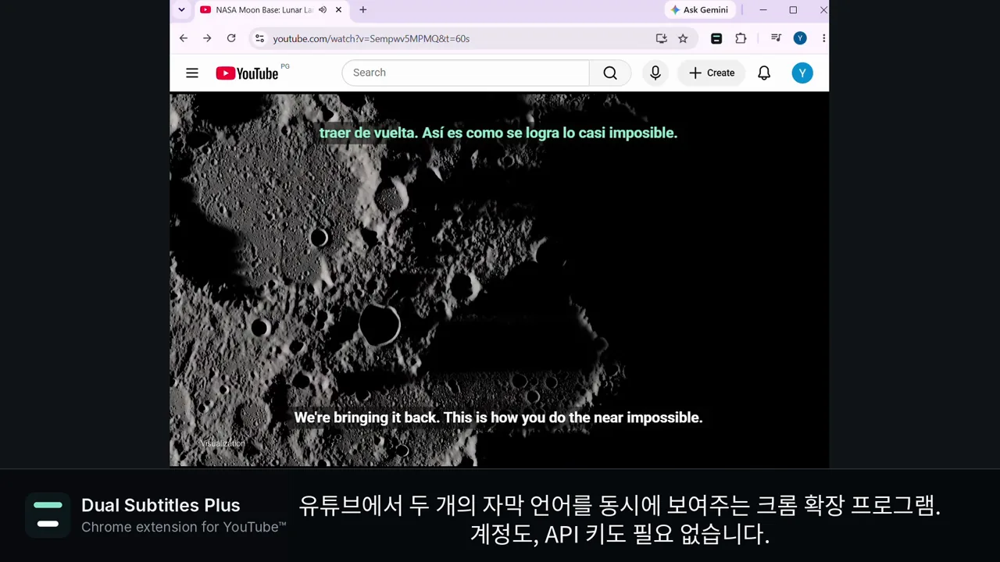

위: 번역은 상단, 원어는 하단에 따로. 아래: 두 줄을 모두 하단에 모아서.

팝업: 번역 언어, 배치, 글자 크기를 고릅니다.

설정 더 보기: 색상, 배경, 아래쪽 여백을 조절합니다.
주요 기능
- 이중 자막 — 영상의 원어 자막과 다른 언어의 자막을 동시에 표시합니다.
- 자유로운 자막 배치 — 번역 자막은 상단, 원어 자막은 하단에 표시하거나 두 자막을 모두 하단에 쌓아 표시할 수 있습니다. 두 자막이 서로 겹치지 않도록 표시할 수 있습니다.
- 자막 표시 설정 — 글자 크기, 색상, 위치를 자유롭게 조정할 수 있습니다. 선택한 언어와 자막 표시 설정은 다음 영상에서도 그대로 유지됩니다.
- 별도의 계정이나 API 키가 필요하지 않습니다.
작동 방식
- 원어 자막 — YouTube 및 Netflix: 영상에서 제공하는 자막을 사용합니다. 사용 가능한 자막이 없으면 확장 프로그램에서 안내합니다.
- 번역 자막 — YouTube: YouTube의 자체 번역 기능을 사용합니다. Netflix: 선택한 언어의 자막이 제공되면 해당 자막을 사용합니다. 제공되지 않으면 Chrome이 사용 가능한 자막을 사용자의 기기에서 직접 번역합니다(지원되는 언어에 한함, 39개 언어).
- 시작 방법 — YouTube: 별도 설정 없이 바로 사용할 수 있습니다. Netflix: 처음 한 번만 확장 프로그램을 열고 "넷플릭스에서 켜기"를 선택한 다음 접근 권한을 허용하면 됩니다.
- 개인정보 보호 — 본 확장 프로그램은 어떠한 데이터도 외부로 전송하지 않습니다. 별도의 서버나 계정이 없으며, 사용 통계도 수집하지 않습니다. 사용자 설정은 브라우저에 저장됩니다.
알아두실 것
- 인터페이스 지원 언어: English, 한국어, 中文 (简体 / 繁體), Português, Español, Türkçe, Tiếng Việt, 日本語, Français, العربية.
- 번역 품질은 확장 프로그램 자체가 아닌 YouTube, Netflix 또는 Chrome의 번역 기능에 따라 달라집니다.
자주 묻는 질문
- YouTube에서 자막 두 개를 동시에 보려면 어떻게 하나요?
- 자막이 있는 동영상을 열고 확장 프로그램 팝업의 "번역 언어"에서 언어를 선택하세요. 추가로 설정할 것은 없습니다.
- 번역 자막은 위에, 원어 자막은 아래에 놓을 수 있나요?
- 네. 두 자막을 모두 아래에 쌓아서 표시할 수도 있습니다.
- 자막 크기, 색상, 위치를 바꿀 수 있나요?
- 네. 팝업에서 "배치"와 "글자 크기"를 선택하세요. 더 조정하려면 팝업의 "설정 더 보기"를 누르세요. 원어와 번역의 색상을 각각 지정하고, 배경 불투명도와 화면 아래쪽에서의 거리를 조정할 수 있습니다.
- 다음 동영상에서도 설정이 유지되나요?
- 네. YouTube와 Netflix에서 다음 동영상을 볼 때도 언어, 배치, 크기, 색상 설정이 유지됩니다.
- 계정이나 API 키가 필요한가요?
- 아니요.
- 내 자막이나 데이터를 다른 곳으로 보내나요?
- 아니요. 서버도 분석 기능도 없으며, 설정은 브라우저에 저장됩니다.
- 자동 생성 자막만 있는 동영상에서도 작동하나요?
- 네. 다만 YouTube가 자동으로 생성한 자막은 제작자가 직접 작성한 자막보다 번역 정확도가 떨어집니다.
- Netflix에서 이중 자막을 보려면 어떻게 하나요?
- 처음에 확장 프로그램 팝업의 "넷플릭스에서 켜기"를 누르고 접근을 허용하세요. 그다음부터는 자동으로 작동합니다. Chrome은 그때만 Netflix 접근 권한을 요청하며, 거절해도 됩니다. 이 권한 없이도 YouTube는 작동합니다.
- Netflix 작품에서 자막 두 줄이 나오지 않는 이유는 무엇인가요?
- 팝업의 "넷플릭스에서 켜기"를 아직 누르지 않았거나, 작품에 자막이 없거나, 자막이 텍스트가 아닌 이미지라서 읽을 수 없는 경우입니다. 어느 경우인지는 팝업에서 알려줍니다.
- Netflix에 내 언어로 된 자막이 없으면 어떻게 하나요?
- Chrome이 기기에서 자막을 번역합니다. 지원되는 환경에서 39개 언어를 사용할 수 있습니다. 이를 위해 최신 버전의 Chrome이 필요하고 특정 언어를 처음 사용할 때는 Chrome이 해당 언어를 한 번 다운로드합니다.
- Disney+, Prime Video나 다른 사이트에서도 작동하나요?
- 아니요. YouTube와 Netflix에서만 작동합니다.
- Language Reactor와 어떻게 다른가요?
- Dual Subtitles Plus는 손쉽게 사용할 수 있도록 만들어졌습니다. 언어를 선택하면 YouTube와 Netflix에서 자막 두 줄이 표시됩니다. 계정도 API 키도 필요 없고, 새로 배울 것도 없습니다. 이중 자막으로 언어를 공부하려는 학습자가 편하게 선택할 수 있습니다.
- 스마트폰에서도 작동하나요?
- 아니요. 이는 컴퓨터의 Chrome에서 사용하는 확장 프로그램입니다.
- 재생 속도가 느려지나요?
- 자막 트랙은 동영상마다 한 번 가져와 기기에서 표시하므로 재생에는 영향이 없습니다.
- 잠시 꺼둘 수 있나요?
- 네. 팝업 맨 위의 스위치를 사용하세요. 끄는 즉시 YouTube 자체 자막이 다시 정상적으로 작동합니다.
- 사용하던 다른 이중 자막 확장 프로그램이 작동하지 않아요. 왜 그런가요?
- YouTube 이중 자막 확장 프로그램이 작동하지 않는 이유와 확인할 사항